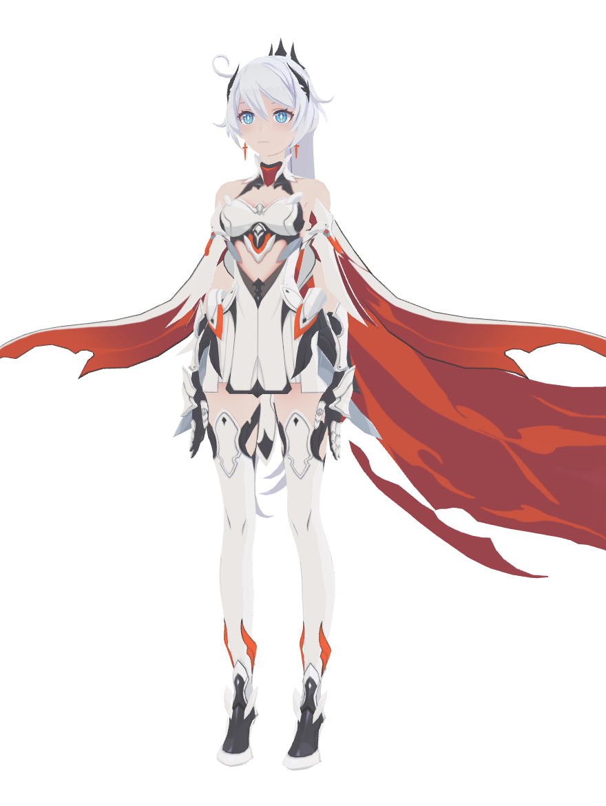
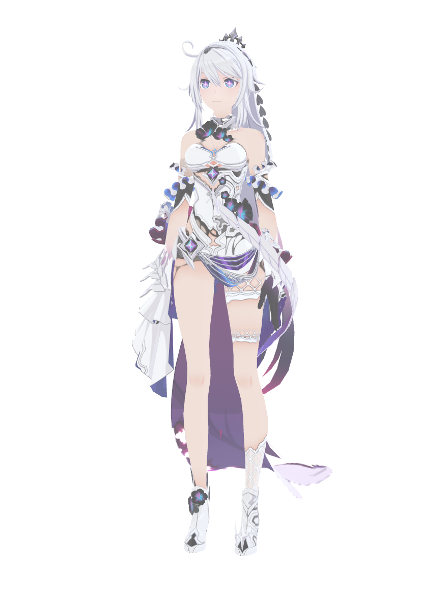
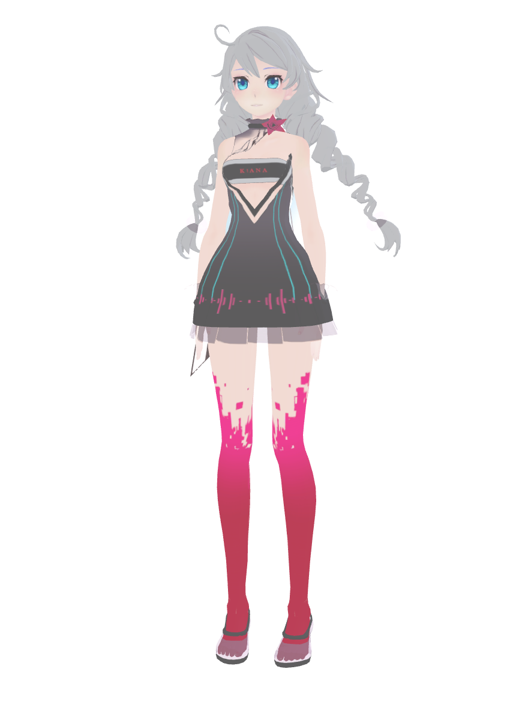
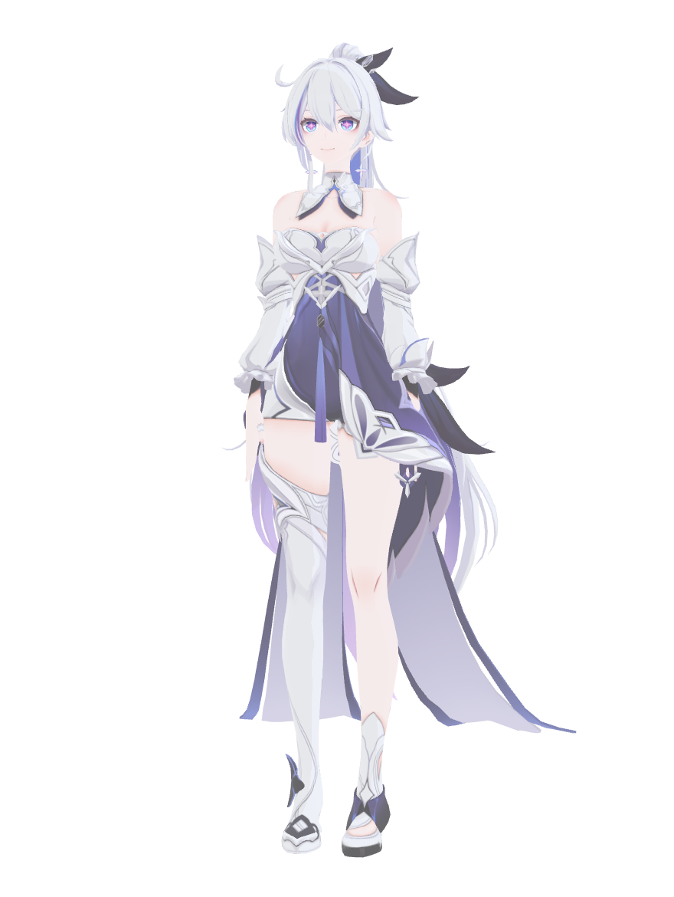

不是摆件——她会看你、会聊天、会唱歌，还会提醒你喝水。
由 DeepSeek 按琪亚娜人设生成台词，会结合当前时间、节日、你正在听的歌、刚对她做过的事。打字聊天记得最近几轮，回复带情绪动作。没配 Key 也有约 180 句手写台词兜底。
Edge 在线语音合成，元气 / 温柔 / 软萌台湾腔三种音色。说话时嘴型跟着配音音量实时开合；合成结果缓存本地，断网退回打字音效。
波点音乐、Apple Music、Spotify 放歌时，她会报歌名、逐句显示歌词、按音节对口型、身体摇摆，每三句闭眼唱一句。歌词优先读本地 .lrc，找不到再查 LRCLIB。
14 个代码生成的舞步，不需要 VMD 动作文件。按歌词分段编舞：副歌高能量、主歌轻松、结尾定格；BPM 由 AI 按歌名估计，同一首歌的编舞永远固定。
摸头眯眼脸红打呼噜、戳耳朵乱抖、戳尾巴炸毛、双击跳 8-bit 小曲、拖来拖去会晕。眼睛一直跟着你的鼠标，3 分钟没人理就睡着，点一下就醒。
整点报时、喝水提醒、番茄钟、久坐提醒、节日专属台词、好感度养成。所有音效由 WebAudio 实时合成——喵叫、呼噜、铃铛，一个音频文件都没有。
右键菜单 → 模型。Q 版猫娘是纯代码程序化建模，四个 MMD 模型已内置在安装包里，开箱即用。




透明区域鼠标穿透，不挡你操作其它窗口。窗口位置、设置、好感度都会记住。
| 操作 | 她的反应 |
|---|---|
| 点头 / 在头上来回撸 | 眯眼、脸红、呼噜声、冒爱心，好感度 +1 |
| 点猫耳 | 耳朵乱抖：「耳朵很敏感的啦！」 |
| 点尾巴 | 炸毛、哈气 |
| 点铃铛 | 叮铃铃 |
| 点身体 | 跳一下 + 喵 |
| 双击 | 跳舞 + 原创 8-bit 小旋律 |
| 按住拖动 | 挣扎；放下后晕乎乎 |
| ⌘⇧K / Ctrl+Shift+K | 显示 / 隐藏 |
| ⌘⇧J / Ctrl+Shift+J | 打开聊天框 |
当前版本 v1.0.1，安装包已内置全部四个 MMD 模型。全部文件托管在 GitHub Releases。
xattr -cr "/Applications/琪亚娜猫娘.app"。
安装包文件名是英文（GitHub 对中文文件名支持有问题），装进电脑后应用名仍然是「琪亚娜猫娘」。
全部版本见 Releases 页面。
想自己改一改？三步跑起来。
# 克隆并启动
git clone https://github.com/wydhcws/kiana-neko-pet.git
cd kiana-neko-pet
npm install
npm start
# macOS 跟唱音乐功能：额外编译一次原生小工具
#（需要 xcode-select --install 和 brew install cmake）
npm run build:nativeDEEPSEEK_API_KEY 即可启用 AI 台词，
启动一次后会用系统钥匙串加密保存。没配置也能用，自动退回手写台词。
自己打包：npm run dist:mac / npm run dist:win；
推一个 v* tag 会触发 GitHub Actions 自动构建发版。
《崩坏3》及琪亚娜·卡斯兰娜的角色版权归 miHoYo / HoYoverse 所有。本项目是非商业的粉丝同人作品，与官方无任何关联，完全免费。
内置 MMD 模型（薪炎律者 / 终焉律者 / 崩坏歌姬 / 咚琪小礼裙）由社区作者 神帝宇 制作（作者主页），版权归 miHoYo。如版权方认为不妥，请到 GitHub 开 issue，作者会立即处理。
跟唱功能使用 mediaremote-adapter（BSD-3-Clause）；歌词来自 LRCLIB。项目代码以 MIT 协议开源（仅覆盖代码，不含模型与角色素材）。